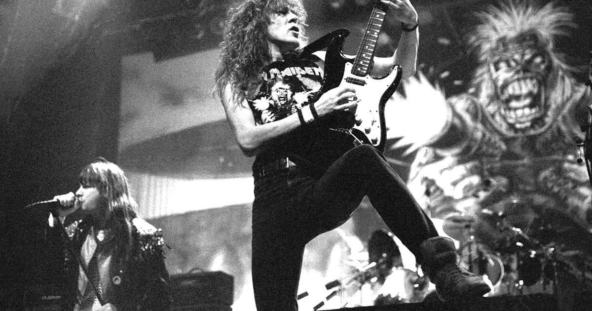

Uno de tipos de rock que cambió la vida de más de una generación es el heavy metal. Con su sonido potente y sus letras que abarcan un sinfín de temáticas, los grupos del metal tuvieron su época de gloria en los años 70 y 80, dejando un legado que hoy sigue siendo atractivo para miles de personas en todo el mundo. Aquí dejamos la historia resumida del heavy metal para que conozcas todo sobre los tipos y las mejores bandas.
El momento y lugar exacto en el que el heavy metal irrumpió en escena fue en Inglaterra, Birmingham, en el año de 1968. Cuando el grupo Black Sabbath, formado por un grupo de personas surgidas de una ciudad repleta de ruidosas fábricas, logró sintetizar el rock ‘n roll tradicional y el blues y las pesadillas de una clase trabajadora que no aspiraba a mucho, pero se quejaba de todo.
El momento y lugar exacto en el que el heavy metal irrumpió en escena fue en Inglaterra, Birmingham, en el año de 1968. Cuando el grupo Black Sabbath, formado por un grupo de personas surgidas de una ciudad repleta de ruidosas fábricas, logró sintetizar el rock ‘n roll tradicional y el blues y las pesadillas de una clase trabajadora que no aspiraba a mucho, pero se quejaba de todo. Black Sabbath forjó un camino musical completamente nuevo y único, marcado por los melancólicos riffs de guitarra de Tony Iommi, las inteligentes letras y el atronador bajo de Geezer Butler, los estruendosos tambores de Bill Ward y, por supuesto, la voz y la personalidad únicas de Ozzy Osbourne. La música era muy oscura y siniestra, e iba en contra con la música pop de “flower power” que sonaba entodas partes. Líricamente, Sabbath abordaba abiertamente temas socialmente tabúes que iban desde la corrupción política, el uso recreativo de drogas y al ostracismo social. Comparado con los actos de rock duro de finales de los 60, las composiciones e interpretaciones de Sabbath eran minimalistas en forma y ejecución. Sin embargo, lo que les faltaba en complejidad, Black Sabbath lo compensaba en términos de potencia e intensidad. Black Sabbath estableció el estándar como la primera banda de heavy metal de verdad.
El heavy metal se caracteriza típicamente por un sonido dominado por la guitarra y la batería. El ritmo es intenso y se usa un estilo de tocar los instrumentos más clásico, como el blues o los sonidos sinfónicos. Sin embargo, los subgéneros del heavy metal tienen sus propias variaciones estilísticas sobre la forma original que a menudo omiten o alteran muchas de estas características. Hay una amplia variedad de sonidos y estilos dentro del género del heavy metal. Sin embargo, según los especialistas, de todas las formas del rock & roll, el heavy metal es la más extrema en términos de volumen y teatralidad. La columna vertebral del heavy metal es la guitarra eléctrica. Muchas bandas tienen dos o más. Ciertos géneros tienen algunas partes tranquilas y suaves, pero la mayoría del metal es fuerte, intenso, rápido y agresivo. Los estilos vocales en el heavy metal van desde el canto melódico al canto agresivo y al grito ininteligible.
Los años 80 vieron una explosión en la popularidad, el desarrollo musical y la expansión geográfica del heavy metal. A principios de los 80 se produjo un movimiento dentro de Inglaterra llamado la Nueva Ola del Heavy Metal Británico liderado por bandas como Iron Maiden, Judas Priest, y Diamond Head. La base de blues que caracterizaba prácticamente todas las formas anteriores de música rock era ahora casi indetectable.
La Nueva Ola del Heavy Metal Británico se definía por altas y llorosas voces, dos guitarras eléctricas armonizadas, y temas relacionados con la rebelión, el satanismo y el ocultismo. La popularidad del Heavy Metal se extendió en Norteamérica y Europa, llenando estadios y escandalizando a los padres conservadores.
En California, los músicos de heavy metal comenzaron a tocar incluso más rápido que sus pares británicos, creando el subgénero del thrash metal. Metallica, Slayer y Megadeth estuvieron a la vanguardia de este movimiento. El thrash, en combinación con el metal extremo que se estaba desarrollando en Europa, marcaría el comienzo de una división dentro de la subcultura del heavy metal entre las facciones del metal convencional y del metal extremo.